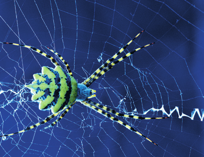
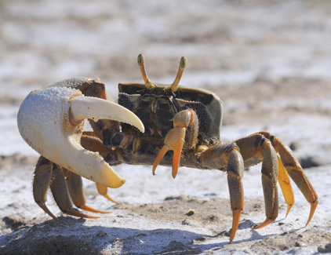

En este grupo se incluyen la araña, la garrapata, el escorpión y el pseudoescorpión. Su cuerpo está formado por el cefalotórax (cabeza y tórax) y el abdomen.
El cefalotórax posee seis o ocho ojos simples, dos quelíceros —para sujetar a las presas e inocularles el veneno—, dos palpos sensitivos o prensiles y ocho patas locomotoras.
En el abdomen tienen las hileras, con las que segregan la seda para construir trampas, sacos de huevos, paquetes de sperm y bolsas para alojar a las crías.
Los arácnidos respiran a través de tráqueas y pulmones. Son grandes depredadores terrestres que, en muchos casos, inoculan veneno a sus presas para matarlas o paralizarlas.

Araña colorida en telaraña
Crustáceos
Son crustáceos el cangrejo, la cochinilla, el percebe y la bellota de mar. Su cuerpo está formado por la cabeza, el tórax y el abdomen. Generalmente, la cabeza y el tórax forman el cefalotórax.
El cefalotórax tiene, en la mayoría de especies, dos ojos compuestos, cuatro antenas sensibles, dos mandíbulas y ocho o más patas locomotoras o adaptadas a la captura de las presas.
En el abdomen disponen de unos apéndices que emplean para nadar o sujetar los huevos y a los alevines.
Los crustáceos respiran por branquias o a través de la piel. Suelen ser depredadores, aunque también hay especies carroñeras, filtradoras y parásitas.

Cangrejo en la orilla
Miríapodos
Son miriápodos el ciempiés y el milpiés. Su cuerpo está formado por la cabeza y el tronco.
En la cabeza poseen dos largas antenas, ocelos y varios apéndices bucales.
El tronco está formado por un número variable de segmentos, cada uno de los cuales posee dos patas, en el caso de los ciempiés, y cuatro, en el de los milpiés. Los ciempiés tienen dos apéndices terminados en una uña venenosa en el primer segmento del tronco.
Los miriápodos respiran por tráqueas que se comunican con el exterior mediante dos orificios por cada segmento. Los ciempiés son activos depredadores, mientras que los milpiés son herbívoros o carroñeros.